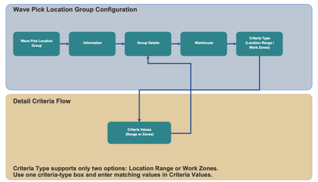

Wave Pick Location Group configuration defines the warehouse and criteria rules used to create and sequence pick location groups during wave processing. You can configure group information, warehouse scope, criteria type, and criteria values.
Note: This configuration is currently accessible only from the Wave Configuration wizard and is not available as a standalone configuration outside the wave wizard.

Select or create the Wave Pick Location Group record.
Create New: Create a new pick location group record.
View All: Review and select an existing pick location group record.
Wave Pick Location Group: Enter the group name.
Description: Enter a description for the record.
Configure warehouse and criteria values for the selected group detail record.
Warehouse: Select the warehouse where this pick location group is applicable.
Select one criteria type for the group detail:
Location Range: Use range-based location criteria.
Work Zones: Use one or more work zones as criteria.
Enter values based on the selected criteria type.
Location Range: Provide Location Range Start and Location Range End.
Work Zones: Select one or more work zones from the available list.
Use Back, Save, and Continue to move through wizard steps and store the Wave Pick Location Group settings.